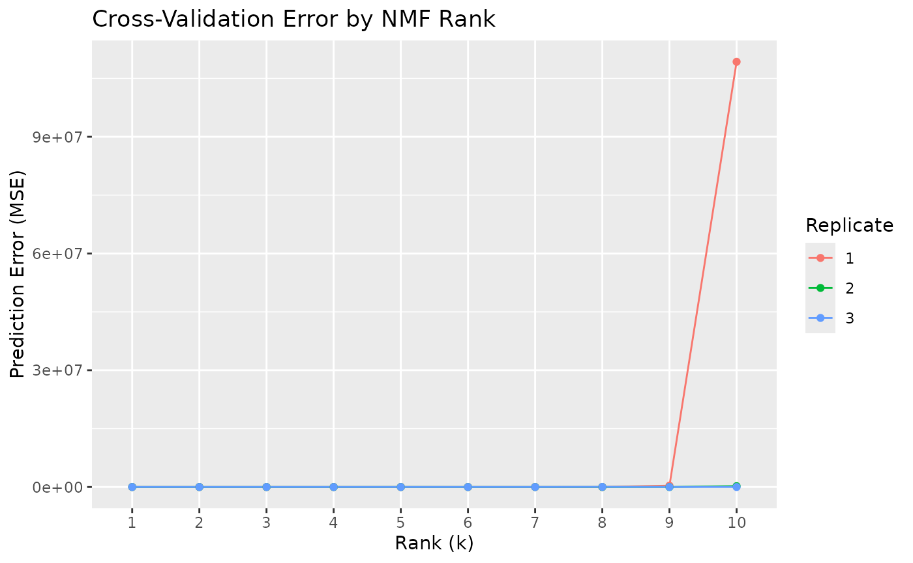

Mosaic_Integration.Rmd
library(MosaicNMF)
library(RcppML)
#> RcppML v0.5.5 using 'options(RcppML.threads = 0)' (all available threads), 'options(RcppML.verbose = FALSE)'
testList = MosaicNMF::getTestData()
for (i in 1:length(testList)){
testList[[i]] = MosaicNMF::scaleDataset(testList[[i]])
}
a_mat = MosaicNMF::stackMatrix(dataList = testList,missingValue=0)
missingValues = MosaicNMF::getMissingIndices(testList)
missingValues = MosaicNMF::getMaskMatrix(
missingRows = missingValues$rowCoord,
missingColumns = missingValues$colCoord,
dim = "row",
numRow = MosaicNMF:::getTotalRows(testList),
numCol = length(MosaicNMF:::getUniqueCells(testList))
)
# mask2 = MosaicNMF::getRandomMask(dataList = testList,ratio = .20,seed = 2)
# debug(MosaicNMF::crossValidateWithMissingValues)
# undebug(MosaicNMF::crossValidateWithMissingValues)
res= MosaicNMF::crossValidateWithMissingValues(data=a_mat,k=1:10,missingValues = missingValues)
#> Warning in Matrix.DeprecatedCoerce(cd1, cd2): 'as(<matrix>, "ngCMatrix")' is deprecated.
#> Use 'as(as(as(., "nMatrix"), "generalMatrix"), "CsparseMatrix")' instead.
#> See help("Deprecated") and help("Matrix-deprecated").
# res= RcppML::crossValidate(data=a_mat,k=3:5)
nplot = MosaicNMF::plotCV(res)
nplot